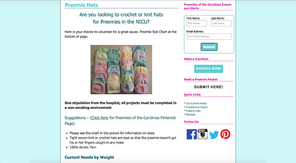
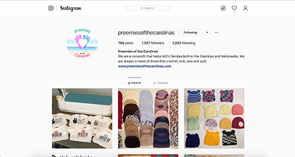
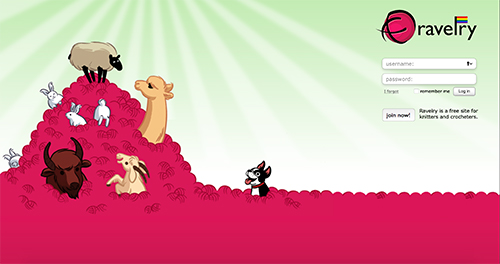
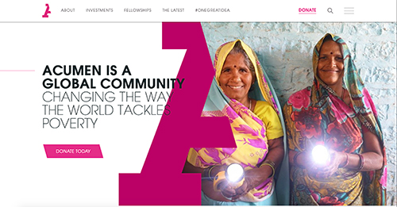
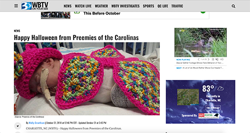

Research
I did primary research on my client, Preemies of the Carolinas, and other secondary research on various sharing economy news and organizations. I also interviewed my client and a target audience member.
Primary Client Research
Research from the Preemies of the Carolinas
Preemies of the Carolinas is a non profit organization, founded in September 2015 by Jeniffer Opferman, that aims to help children of the Georgia, Florida, North and South Carolina who will have any type of stay in the children's hospital. This charity specifically serves families who have premature babies in the NICU. They accept donations of knitted or crochetted hats, blankets, booties, sweaters, and flannel inspirational hearts that they seasonally distribute to eleven hospitals in the area. They also accept monetary donations and encourage people to volunteer to help distribute goods during the hollidays. Their site also offers an application for families out of state to fill out if they would like to receive a preemie packet with just the cost of shipping. There is alot of information on this website from list of hospitals served, general information about this charity, pictures of familes served, to requirements for knitters of what products they are in need of this season.
Website Features
Preemies of the Carolinas webpage has multiple features and pages with various information that makes a challenge for clients to find needed information quickly.

- Site has a section for people to share their experience of receiving the Preemie packet and leave a review.
- Call to action asking volunteers to donate hats and blankets for local NICU's and preemies nationwide.
- Site has an application to request a preemie packet of their goodies.
- Button for Donations.
- Option to apply for a newsletter of updates, upcoming events, and alerts.
- About page has lots of information on the origin .
Social Media


- They are more active on facebook than on their website.
- Host birthday fundraisers on facebook
- five out of five written Reviews from families that were helped
- Pictures of babies wearing their handmade products.
- Casual posts and updates of their work.
- Use of logo as a profile picture.
- Pictures of their hats, blankets, and inspirational hearts.
Secondary Client Research
For my secondary research, I wanted to look at other charity sites and note their successess and features.
Ravelry
Ravelry is a website that connects knitters and crochetters around the worlds, and they share their patterns, tips, and
tricks on this site. It is almost like facebook, but only for knit crafters.
This site serves its purpose well, because it has a simple call to action wtih
minimum information needed from you to fill out.

Acumen
Acumen is a global community that works hard to bring electricity into impovorished villages in struggling countries.
The site functions well because of the important button calling you to donate.
I took for inspiration their clean, energetic, positive and hopeful feel of the site as a whole.
Functional and clear layout and grid usage makes this site very professional.
Typefaces were paired up well together, something that I kept in mind while designing my clients site.

Adopt a Love Story
A successful site working for a non profit adoption organization. The banner is simple and is not srammed with text. The call to action button is easily identified and accessable. The overall feel of the site is positive and hopeful, which is definitely a feeling that I need to evoke in the audience. Sans serif typefaces have been used for most non profit organizations, and it makes them more friendly and approachable. The navigation is simple and easy to manage. The size of the button is a great example because even with the new innovation of a responsive screen size, the button will still be an appropriate finger size.
Recent News
Preemies of the Carolinas delivers baby costumes for christmas and halloween yearly, and it is one of their most exciting moments.

WBTV news posted an article written by Molly Grantham on Octiber 2018 about Preemies of the Carolinas bringing halloween costumes for the babies in the NICU. The staff, families, and parents were all thrilled to see such care and love from the volunteers and organization members. Jennifer Opferman was able to post pictures of the babies in their costumes to her site and social media. It is very important for this organization to have good quality images to use and be able to give for publishing and advertisement purposes and article posts, as well as many volunteers, not only willing to distribute goods, but to be friendly and caring to the families that are in the NICU. In this article they talk about the organization spreading their products cross eleven hospitals in the area, and slowly trying to expand and reach more.
Interviews
I was able to talk with the Founder of A Preemies of the Carolinas as well as a possible user to gain important primary
information about organization.
Client Interview
Preemies of the Carolinas was started in September 2015 by Jennifer Opferman, a Pittsburgh,
PA native by heart. For the past 11 years she’s been living in Charlotte,
NC with a love for warmer weather and sunny skies.
After a personal hospitalization experience, Jennifer was looking to give back and provide
children in the hospital with something special from home,
something handmade to provide comfort to the patient. Jennifer was inspired by The Preemie Project of Iowa and
how they have comforted so many NICU families. Preemies of the Carolinas made their first donation of Inspirational
Hearts and Preemie Hats October 7th, 2015 to Novant Hemby Children’s Hospital.
Currently they provide Hearts, Hats and blankets to local NICU’s, and send individual
packets out to parents nationwide who currently have a preemie or baby in the NICU. Since September 2015 they have grown and
been accepted into eleven hospitals and have expanded across
North and South Carolina, Florida, and Georgia.
Summary: I learned the background story of Preemies of the Carolinas from Jennifer as well as the goal of the website. According to Jennifer, the main goal is to attract new members and be a community-based charity for users to connect with a simple application or information on donations and knitting requirements. The main problems were that the site was outdated and there was not a mobile version as many users desired.
User Interview
Anna Gladilin is a preschool teacher at Anderson Christian School and a wife to a minister at God Will Provide Church. She strongly believes in helping those that are in need and bringing comfort and encouragement during difficult times. She works alot with children and is very active in nonprofit community service activities related with the Christian school and her church.
Summary: From interviewing Anna, I learned what needs to be included on the website for people to feel comfortable getting involved. High quality photos are appreciated as well as knowing someone and hearing trustworthy stories of how families were helped and benefitted by the charity. A clear buttom for donations is very important, since that would be one of the most common reasons for users to visit the site. Details are also very important to showcase an easily accessible site with information easy to be found. With more recent innovations of technology it's very important to make a design and layouth that would be responsive to the different screen sizes.
Natasha Kiforishin is a mom of four, and the owner of her knitting boutique, Knits & Style. She crochettes and knits orders daily, and is really interested in making extra products to be donated to a charity like Preemies of the Carolinas.
Summary: After talking to Natasha I concluded that there needs to be a clear list of requirements on knit products on the site that is easily accessable with one or two button clicks. At the moment, the requirements on the site are jumbled with various other information. There should also be information on where to drop off/ship the products, and how to get in touch with hospitals for distribution.